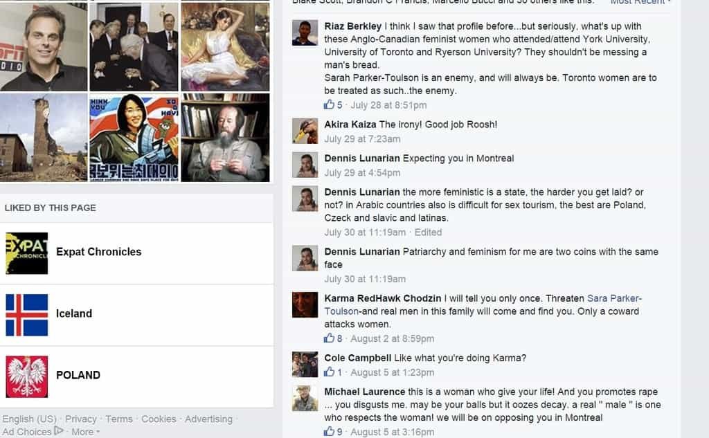

< < < Back
Feminist Sara Parker-Toulson Supports Violence To Stop Roosh V’s Speech In Montreal – Return Of Kings
What worries Parker-Toulson the most is that Valizadeh’s ideology could push some men over the edge.
“This can turn to violence really quickly,” said Parker-Toulson.
– Kalina Laframboise of the Montreal Gazette, quoting Sara Parker-Toulson, who previously publicly “liked” a threat made by “Karma RedHawk Chodzin” to “send men” after Roosh.
In the spirit of her fellow hatemonger Aurelie Nix, who has disseminated a made-up rape threat about Roosh (and is yet to explain her frivolous police complaint), anti-Roosh petition organizer Sara Parker-Toulson has told the Montreal Gazette that the Return of Kings proprietor’s presence in Canada will probably lead to violence. Yet she has forgotten something. Only days ago, Parker-Toulson “liked” (and therefore condoned) a violent threat by Karma RedHawk Chodzin against Roosh.
Chodzin, a lover of spirituality (according to her Facebook profile), wrote the following in response to a non-violent post by Roosh on his page:
I will tell you only once. Threaten Sara Parker-Toulson-and real men in this family will come and find you. Only a coward attacks women.
But don’t worry, Chodzin is a member of the website “Peace Villages” (under the name Karma Chodzin Lalo). Therefore she must be a very placid person who never makes public threats on Facebook because people disagree with her position.
You can support violent threats if you’re a feminist and someone disagrees with you

The “threat” Roosh made was asking why Sara Parker-Toulson, his virulent critic, was liking his posts but had created an angry petition about him. The response? Karma RedHawk Chodzin threatened to “send men” after Roosh.
So far, eight people, including Parker-Toulson, have liked the highly ironic threat. The others are Isabelle Perreault, Leslie Cadieux Sanche, Monique Dubreuil, Sebastien Lemay (the sole white knight), Tabitha Beaudet, Marie-Frédérique Gravel and Shab Kassaie. It appears that pointing out the hypocrisy of a feminist (Parker-Toulson had been liking Roosh’s posts but organized an anti-free speech petition against him) is now enough to “provoke” serious threats against someone the feminists themselves claim promotes violence through free nonviolent speech.
It is most amusing that all nine of them, including the poster herself, would practice their beliefs by advocating for men to do the dirty work of chasing someone down. How very feminist and gender equal of them! Women standing up for themselves… by threatening to instruct men to presumably beat someone up.
The truly dystopian element of Chodzin’s threat is the conflation of verbal disagreement with some kind of physical danger. Normally, people respond with threats when they themselves are physically threatened. But Roosh’s calling out of Parker-Toulson’s illogical liking of his post leads to a violent threat. Is this what you call proportional?
Criticized a feminist? You must be (physically) “attacking women”
Karma RedHawk Chodzin/Karma Chodzin Lalo, a feminist and woman of peace who threatens to “send men” after people on Facebook.
Once more, raising the specter of domestic violence is a tactic feminists use to try and silence their opposition. Can’t respond to a verbal retort about someone’s bizarre behavior of liking an opponent’s posts but simultaneously rallying against him? Mention a buzzword associated with physically beating women! Then comes the anti-“domestic violence” brigade, at the ready to blunt the “ferocious attack” of Roosh’s verbs, nouns, prepositions and adjectives. Does Sara Parker-Toulson have any Facebook bruises, I wonder?
The tragedy is that people like Aurelie Nix and Sara Parker-Toulson, who make thoroughly disproven false rape threats and publicly support a call for violence, are being taken seriously by the biased Canadian media. Instead of verifying the claims made by each and investigating their backgrounds, their allegations are treated at face value and as gospel truth.
So far this week, CBC Montreal defamed Roosh by saying he had “posted” Aurelie Nix’s nude photos without any context, even though he and Kings Media had only provided links to her self-spread “modeling collection” (which was accessible to children as well). When combined with other one-sided news stories, the idea is to savagely paint Roosh as someone both threatening rape and criminally distributing private sexually-themed material.
Operation Medusa is thoroughly refuting the feminist hate
Aurelie Nix, Parker-Toulson’s partner in depravity, has been exposed as a pathological liar and peddler of false rape threats.
SJWs such as Aurelie Nix and Sara Parker-Toulson have become carried away with their vitriol and continue to seriously undermine their credibility, if it wasn’t already grossly in question. Forgetting that their defamatory, anti-free speech platforms are displayed publicly and thus can be torn apart, they’ve followed up their charges that Roosh “promotes violence” by committing libel (Nix) and endorsing the very violence that they falsely claim Roosh wants to stir up (Parker-Toulson and Co).
The Montreal Gazette, Toronto Star, CBC and CJAD Radio all have an obligation to present bonafide journalism to the masses, not poorly-investigated advertising which masquerades as impartial writing. The only “crime” committed by Roosh is the age-old right of speaking one’s mind peacefully, which seems to have long fallen out of fashion in Canada.
Read More: Canadian Aurelie Nix Falsely Accuses Roosh Of A Rape Threat With Help From Journalist Emily Campbell


{kind=link}